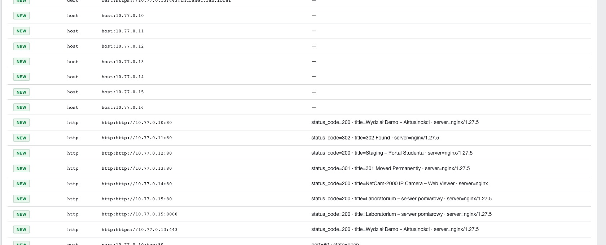
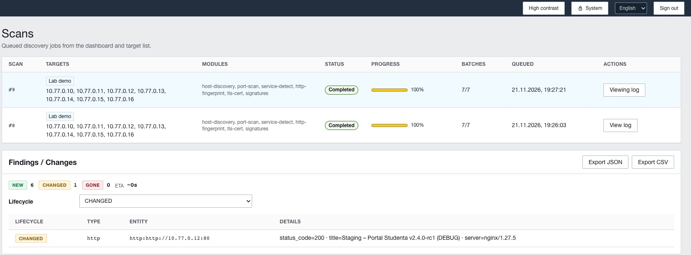

DemoDziałający prototyp na lokalnym labie
7 usług w Dockerze, dwa skany, zmiana infrastruktury pomiędzy
- Import CSV → grupa → harmonogram → skan
- Fingerprint: CMS, panel admina, staging, kamera IoT, TLS
- Zmiana labu → skan #2 → NEW / CHANGED / MISSING
- Eksport JSON/CSV, DefectDojo, rola viewer
Nagranie demo (~4 min, napisy PL){{VIDEO_URL}}
Lab do odtworzenia w repo: demo/lab/lab.sh up




SurfaceX07 / 10